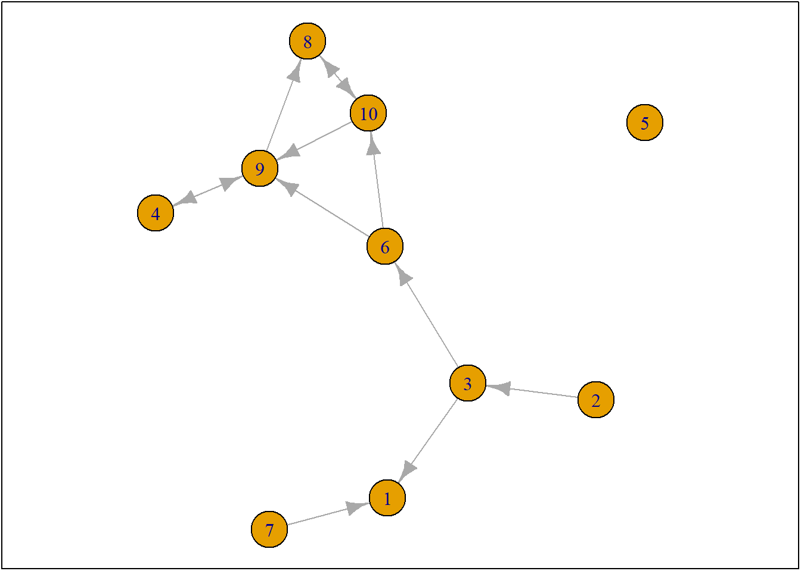
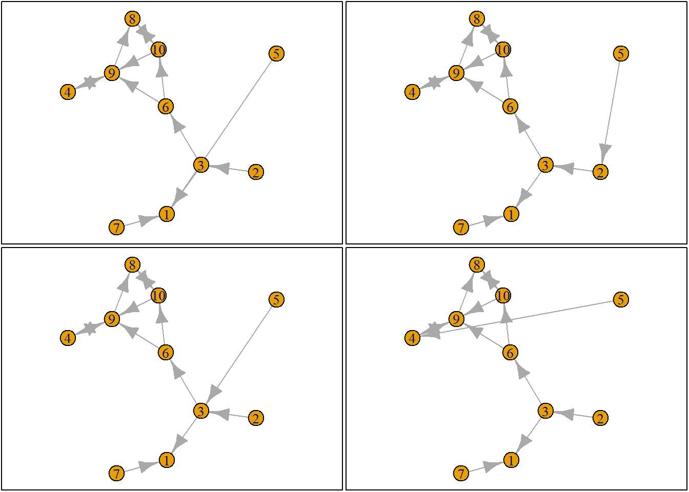
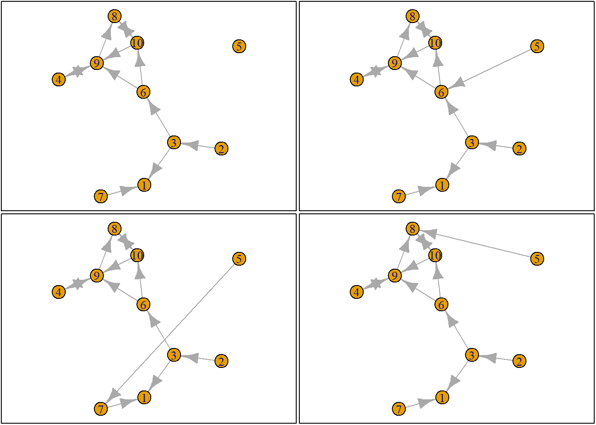
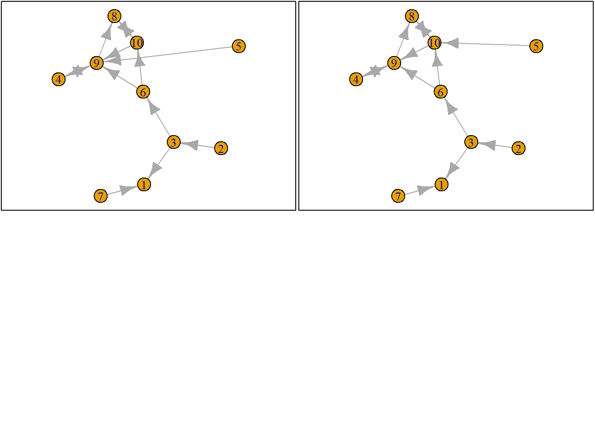
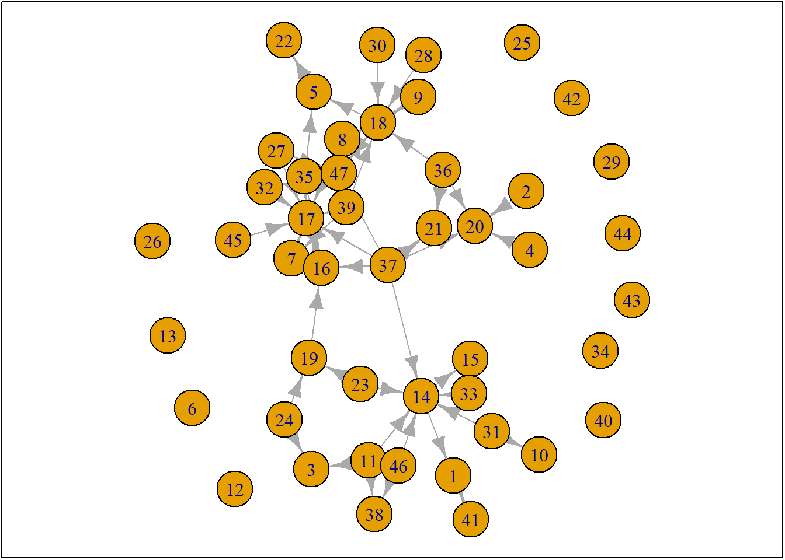

lab3
2026-09-14
1 Algemene functies
## Loading required package: devtools## Loading required package: usethis## [[1]]
## NULL
##
## [[2]]
## NULL
##
## [[3]]
## NULL## Warning: `install_github()` was deprecated in devtools
## 2.5.0.
## ℹ Please use pak::pak("user/repo") instead.
## This warning is displayed once per session.
## Call `lifecycle::last_lifecycle_warnings()` to
## see where this warning was generated.## Using GitHub PAT from the git credential store.## Skipping install of 'RsienaTwoStep' from a github remote, the SHA1 (8071f56c) has not changed since last install.
## Use `force = TRUE` to force installation## Loading required package: RsienaTwoStep## Loading required package: foreach##
## Attaching package: 'foreach'## The following objects are masked from 'package:purrr':
##
## accumulate, when## [[1]]
## NULL1.0.1 Data
ego netwerk
ts_net1## [,1] [,2] [,3] [,4] [,5] [,6] [,7] [,8] [,9] [,10]
## [1,] 0 0 0 0 0 0 0 0 0 0
## [2,] 0 0 1 0 0 0 0 0 0 0
## [3,] 1 0 0 0 0 1 0 0 0 0
## [4,] 0 0 0 0 0 0 0 0 1 0
## [5,] 0 0 0 0 0 0 0 0 0 0
## [6,] 0 0 0 0 0 0 0 0 1 1
## [7,] 1 0 0 0 0 0 0 0 0 0
## [8,] 0 0 0 0 0 0 0 0 0 1
## [9,] 0 0 0 1 0 0 0 1 0 0
## [10,] 0 0 0 0 0 0 0 1 1 0net1g <- graph_from_adjacency_matrix(ts_net1, mode = "directed")
coords <- layout_(net1g, nicely()) #let us keep the layout
par(mar = c(0.1, 0.1, 0.1, 0.1))
{
plot.igraph(net1g, layout = coords)
graphics::box()
}
ego <- ts_select(net = ts_net1)
# we hebben het over ego 5
ego## [1] 5options <- ts_alternatives_ministep(net = ts_net1, ego = ego)
options[[1]]## [,1] [,2] [,3] [,4] [,5] [,6] [,7] [,8] [,9] [,10]
## [1,] 0 0 0 0 0 0 0 0 0 0
## [2,] 0 0 1 0 0 0 0 0 0 0
## [3,] 1 0 0 0 0 1 0 0 0 0
## [4,] 0 0 0 0 0 0 0 0 1 0
## [5,] 1 0 0 0 0 0 0 0 0 0
## [6,] 0 0 0 0 0 0 0 0 1 1
## [7,] 1 0 0 0 0 0 0 0 0 0
## [8,] 0 0 0 0 0 0 0 0 0 1
## [9,] 0 0 0 1 0 0 0 1 0 0
## [10,] 0 0 0 0 0 0 0 1 1 0plots <- lapply(options, graph_from_adjacency_matrix, mode = "directed")
par(mar = c(0, 0, 0, 0) + 0.1)
par(mfrow = c(2, 2))
fplot <- function(x) {
plot.igraph(x, layout = coords, margin = 0)
graphics::box()
}
lapply(plots, fplot)

## [[1]]
## NULL
##
## [[2]]
## NULL
##
## [[3]]
## NULL
##
## [[4]]
## NULL
##
## [[5]]
## NULL
##
## [[6]]
## NULL
##
## [[7]]
## NULL
##
## [[8]]
## NULL
##
## [[9]]
## NULL
##
## [[10]]
## NULL
# out-degree
ts_degree(net = options[[1]], ego = ego)## [1] 1packages = c("stringdist", "stringi", "tidyverse", "kableExtra")
fpackage.check(packages)## Loading required package: stringdist##
## Attaching package: 'stringdist'## The following object is masked from 'package:tidyr':
##
## extract## Loading required package: stringi## Loading required package: kableExtra##
## Attaching package: 'kableExtra'## The following object is masked from 'package:dplyr':
##
## group_rows## [[1]]
## NULL
##
## [[2]]
## NULL
##
## [[3]]
## NULL
##
## [[4]]
## NULLdf <- fload("./data/data_deriv/20230621df_complete.rda")
publications <- fload("./data/data_deriv/20230621list_publications_jt.rda")
publications <- publications %>%
bind_rows() %>%
distinct(title, .keep_all = TRUE)
# select scholars
df %>%
filter(affil1 == "RU" | affil2 == "RU") %>%
filter(discipline == "sociology") -> df_sel
fshowdf(df_sel)| id | uni | discipline | year | name | affil1 | affil2 | position | np | lastname | firstname | ini | gender | gs_id | gs_name | gs_homepage | gs_field | gs_i10_index | gs_h_index | gs_total_cites | gs_affiliation |
|---|---|---|---|---|---|---|---|---|---|---|---|---|---|---|---|---|---|---|---|---|
| 471b42 | RU | sociology | 2022 | Ronald Batenburg | RU | full_prof | batenburg | ronald | male | UK7nVSEAAAAJ | Ronald Batenburg | https://www.nivel.nl/nl/ronald-batenburg | Gezondheidszorg | 94 | 33 | 4306 | Programmaleider NIVEL en bijzonder hoogleraar Radboud Universiteit Nijmegen | |||
| 31144d | RU | sociology | 2022 | Katia Begall | RU | assistant_prof | begall | katia | female | e7zfTqMAAAAJ | Katia Begall | NA | family sociology | 9 | 9 | 1268 | Radboud University Nijmegen | |||
| 888093 | RU | sociology | 2022 | Hidde Bekhuis | RU | other | bekhuis | hidde | male | Q4saWX8AAAAJ | Hidde Bekhuis | NA | Sociologie | 9 | 9 | 458 | Post Doc Sociology, Radboud University Nijmegen | |||
| c47638 | RU | sociology | 2022 | Lonneke van den Berg | RU | postdoc | van den | berg | lonneke | female | vzBNQ1kAAAAJ | Lonneke van den Berg | https://lonnekevandenberg.com/ | Family sociology | 3 | 5 | 79 | Netherlands Interdisciplinary Demographic Institute (NIDI) | ||
| f99757 | RU | sociology | 2022 | Lieselotte Blommaert | RU | assistant_prof | blommaert | lieselotte | female | RG54uasAAAAJ | Lieselotte Blommaert | http://www.ru.nl/english/people/blommaert-e/ | Labor market | 11 | 11 | 479 | Sociology/Social Cultural Research, Radboud University, Nijmegen, the | |||
| 7e85d6 | RU | sociology | 2022 | Rob Eisinga | RU | assistant_prof | eisinga | rob | male | GDHdsXAAAAAJ | Rob Eisinga | http://robeisinga.ruhosting.nl/ | research methods | 83 | 35 | 6401 | Professor social science research methods, Radboud University Nijmegen | |||
| 5f9d45 | RU | sociology | 2022 | Maurice Gesthuizen | RU | assistant_prof | gesthuizen | maurice | male | n6hiblQAAAAJ | Maurice Gesthuizen | NA | Sociology | 45 | 28 | 2972 | Assistant professor | |||
| 3e9d6d | RU | sociology | 2022 | Nella Geurts | RU | postdoc | geurts | nella | female | VCTvbTkAAAAJ | Nella Geurts | NA | Sociology | 3 | 4 | 90 | Department of Sociology, Radboud University | |||
| 7f8ff4 | RU | sociology | 2022 | Saskia Glas | RU | assistant_prof | glas | saskia | female | ZMc0j2YAAAAJ | Saskia Glas | NA | Gender | 6 | 7 | 223 | Assistant Professor (tenured), Radboud University | |||
| 6075fe | RU | sociology | 2022 | Margriet van Hek | RU | assistant_prof | van | hek | margriet | female | ZvLlx2EAAAAJ | Margriet van Hek | NA | Sociology | 10 | 10 | 487 | Radboud University | ||
| 2d4a95 | RU | sociology | 2022 | Remco Hoekman | RU | other | hoekman | remco | male | LsMimOEAAAAJ | Remco Hoekman | https://www.mulierinstituut.nl/over-mulier/medewerkers/remco-hoekman/ | sport sociology | 17 | 13 | 918 | Director, Mulier Institute / Senior researcher, Radboud University | |||
| 61b8a6 | RU | sociology | 2022 | Bas Hofstra | RU | assistant_prof | hofstra | bas | NA | Nx7pDywAAAAJ | Bas Hofstra | http://www.bashofstra.com/ | Sociology of science | 10 | 10 | 966 | Assistant Professor, Radboud University | |||
| 07b8a5 | RU | sociology | 2022 | Judith Koops | RU | postdoc | koops | judith | female | kLiOlQoAAAAJ | Judith C. Koops | NA | family demography | 4 | 6 | 110 | Dr. Family Demographer, Radboud University | |||
| 1bf89e | RU | sociology | 2022 | Gerbert Kraaykamp | RU | full_prof | kraaykamp | gerbert | male | l8aM4jAAAAAJ | Gerbert Kraaykamp | https://www.ru.nl/english/people/kraaykamp-g/ | social stratification | 107 | 51 | 9279 | Professor of Sociology, Radboud Universiteit Nijmegen | |||
| f618fc | RU | sociology | 2022 | Roza Meuleman | RU | assistant_prof | meuleman | roza | female | iKs_5WkAAAAJ | Roza Meuleman | NA | Cultural Sociology | 10 | 10 | 308 | Assistant Professor - Sociology - Radboud University Nijmegen | |||
| dad54c | RU | sociology | 2022 | Michael Savelkoul | RU | assistant_prof | savelkoul | michael | male | _f3krXUAAAAJ | Michael Savelkoul | NA | NA | 9 | 9 | 722 | Assistant Professor - Sociology, Radboud University Nijmegen, the Netherlands | |||
| a576d6 | RU | sociology | 2022 | Peer Scheepers | RU | full_prof | scheepers | peer | male | hPeXxvEAAAAJ | peer scheepers | NA | sociale wetenschappen | 190 | 64 | 16727 | hoogleraar methodologie, faculteit der sociale wetenschappen radboud universiteit | |||
| 5da2d4 | RU | sociology | 2022 | Niels Spierings | RU | associate_prof | spierings | niels | male | cy3Ye6sAAAAJ | Niels Spierings | https://www.ru.nl/english/people/spierings-c/ | politics | 46 | 27 | 2673 | Associate Professor of Sociology, Radboud University | |||
| 07231a | RU/RUG | sociology | 2022 | Jochem Tolsma | RU | RUG | full_prof | tolsma | jochem | male | Iu23-90AAAAJ | Jochem Tolsma | http://www.jochemtolsma.nl/ | social divisions between groups | 38 | 25 | 2888 | Professor, Radboud University Nijmegen / University of Groningen | ||
| b65f6f | RU | sociology | 2022 | Ellen Verbakel | RU | full_prof | verbakel | ellen | female | w2McVJAAAAAJ | Ellen Verbakel | http://www.ellenverbakel.nl/ | Family | 40 | 26 | 2242 | Professor of Sociology, Department of Sociology, Radboud University Nijmegen | |||
| 5e2898 | RU | sociology | 2022 | Mark Visser | RU | assistant_prof | visser | mark | male | ItITloQAAAAJ | Mark Visser | https://www.researchgate.net/profile/Mark_Visser | life course | 10 | 10 | 580 | Assistant Professor, Radboud University | |||
| 9ab0fc | RU | sociology | 2022 | Maarten Wolbers | RU | full_prof | wolbers | maarten | male | TqKrXnMAAAAJ | Maarten HJ Wolbers | http://www.socsci.ru.nl/maartenw/ | school-to-work transitions | 65 | 32 | 4380 | Professor of Sociology, Radboud University, Nijmegen | |||
| 6cca60 | RU | sociology | 2022 | Carlijn Bussemakers | RU | phd | bussemakers | carlijn | female | bDPtkIoAAAAJ | Carlijn Bussemakers | NA | NA | 3 | 3 | 102 | Unknown affiliation | |||
| 4ed5be | RU | sociology | 2022 | Rob Franken | RU | phd | franken | rob | male | NA | NA | NA | NA | NA | NA | NA | ||||
| f92019 | RU | sociology | 2022 | Mustafa Firat | RU | phd | firat | mustafa | male | rrh0V7IAAAAJ | NA | NA | NA | NA | NA | NA | NA | |||
| f782c2 | RU | sociology | 2022 | Aysegül Güneyli | RU | phd | guneyli | aysegul | female | NA | NA | NA | NA | NA | NA | NA | ||||
| 513b49 | RU | sociology | 2022 | Inge Hendriks | RU | phd | hendriks | inge | female | NA | NA | NA | NA | NA | NA | NA | ||||
| e37333 | RU | sociology | 2022 | Thijmen Jeroense | RU | phd | jeroense | thijmen | male | izq-KNUAAAAJ | Thijmen Jeroense | https://www.ru.nl/personen/jeroense-t/ | Political Participation | 1 | 2 | 15 | PhD candidate, Radboud University Nijmegen | |||
| b672bd | RU | sociology | 2022 | Rachel Kollar | RU | phd | kollar | rachel | female | b96_CCUAAAAJ | Rachel Kollar | NA | Migration | 2 | 2 | 49 | PhD Candidate Radboud University, Nijmegen | |||
| ac8ab3 | RU | sociology | 2022 | Nik Linders | RU | phd | linders | nik | male | NA | NA | NA | NA | NA | NA | NA | ||||
| b6cedc | RU | sociology | 2022 | Renae Loh | RU | phd | loh | renae | female | tFaMPOQAAAAJ | Renae Sze Ming Loh | http://renaeloh.com/ | sociology | 2 | 4 | 182 | PhD candidate, Radboud University | |||
| e2ebbb | RU | sociology | 2022 | Maikel Meijeren | RU | phd | meijeren | maikel | male | NA | NA | NA | NA | NA | NA | NA | ||||
| a527b8 | RU | sociology | 2022 | Carly van Mensvoort | RU | phd | van | mensvoort | carly | female | z6iMs-UAAAAJ | Carly van Mensvoort | https://www.ru.nl/english/people/mensvoort-c-van/ | Gender inequality | 2 | 3 | 48 | Radboud University | ||
| 1e61cb | RU | sociology | 2022 | Anne Maaike Mulders | RU | phd | mulders | anne | female | NA | NA | NA | NA | NA | NA | NA | ||||
| 554613 | RU | sociology | 2022 | Katrin Müller | RU | phd | muller | katrin | female | NA | NA | NA | NA | NA | NA | NA | ||||
| 7c14e8 | RU | sociology | 2022 | Klara Raiber | RU | phd | raiber | klara | female | xE65HUcAAAAJ | Klara Raiber | https://www.ru.nl/english/people/raiber-k/ | informal care | 1 | 4 | 44 | PhD candidate, Radboud University Nijmegen | |||
| 809f71 | RU | sociology | 2022 | Marlou Ramaekers | RU | phd | ramaekers | marlou | female | fp99JAQAAAAJ | Marlou Ramaekers | NA | Sociology | 0 | 2 | 7 | Data Manager and Researcher | |||
| c1722b | RU | sociology | 2022 | Sara Wiertsema | RU | phd | wiertsema | sara | female | wgQQD6kAAAAJ | Sara Wiertsema | NA | Sociology | 0 | 1 | 2 | PhD candidate, Radboud University | |||
| a00209 | RU | sociology | 2022 | Janos Betko | RU | phd | betko | janos | male | Cvdrl6AAAAAJ | Janos Betko | NA | welfare | 0 | 5 | 37 | Radboud University | |||
| 8e7b43 | RU | sociology | 2022 | Jansje van Middendorp | RU | phd | van | middendorp | jansje | female | gs0li6MAAAAJ | Jansje van Middendorp | NA | vrijwilligers | 0 | 1 | 8 | Buitenpromovendus Radboud Universiteit | ||
| 91db4e | RU | sociology | 2022 | Elize Vis | RU | phd | vis | elize | female | NA | NA | NA | NA | NA | NA | NA | ||||
| bb8ffa | RU | sociology | 2022 | Tijmen Weber | RU | phd | weber | tijmen | male | KfLALRIAAAAJ | Tijmen Weber | NA | Sociology | 2 | 2 | 60 | Lecturer Statistics and Research, HAN University of Applied Sciences | |||
| 05a9d1 | RU | sociology | 2022 | Elissa El Khawli | RU | other | el | khawli | elissa | female | 2wDZZbsAAAAJ | Elissa El Khawli | NA | NA | 2 | 3 | 27 | Assistant Professor, Erasmus University Rotterdam | ||
| 683c64 | RU | sociology | 2022 | Carl Sterkens | RU | other | sterkens | carl | male | NA | NA | NA | NA | NA | NA | NA | ||||
| e5d4c4 | RU | sociology | 2022 | Paul Vermeer | RU | other | vermeer | paul | male | NA | NA | NA | NA | NA | NA | NA | ||||
| 0e20be | RU | sociology | 2022 | Malou Grubben | RU | other | grubben | malou | female | NA | NA | NA | NA | NA | NA | NA | ||||
| 1c7266 | RUG/RU | sociology | 2022 | Marcel Lubbers | RUG | RU | full_prof | lubbers | marcel | male | 078qsZoAAAAJ | Marcel Lubbers | https://www.uu.nl/staff/MLubbers | Nationalism | 91 | 43 | 8010 | Professor in Interdisciplinary Social Science | ERCOMER | Utrecht University |
f_pubnets <- function(df_scholars = df, list_publications = publications, discip = "sociology", affiliation = "RU",
waves = list(wave1 = c(2018, 2019, 2020), wave2 = c(2021, 2022, 2023))) {
publications <- list_publications %>%
bind_rows() %>%
distinct(title, .keep_all = TRUE)
df_scholars %>%
filter(affil1 == affiliation | affil2 == affiliation) %>%
filter(discipline == discip) -> df_sel
networklist <- list()
for (wave in 1:length(waves)) {
networklist[[wave]] <- matrix(0, nrow = nrow(df_sel), ncol = nrow(df_sel))
}
publicationlist <- list()
for (wave in 1:length(waves)) {
publicationlist[[wave]] <- publications %>%
filter(gs_id %in% df_sel$gs_id) %>%
filter(year %in% waves[[wave]]) %>%
select(author) %>%
lapply(str_split, pattern = ",")
}
publicationlist2 <- list()
for (wave in 1:length(waves)) {
publicationlist2[[wave]] <- publicationlist[[wave]]$author %>%
# lowercase
lapply(tolower) %>%
# Removing diacritics
lapply(stri_trans_general, id = "latin-ascii") %>%
# only last name
lapply(word, start = -1, sep = " ") %>%
# only last last name
lapply(word, start = -1, sep = "-")
}
for (wave in 1:length(waves)) {
# let us remove all publications with only one author
remove <- which(sapply(publicationlist2[[wave]], FUN = function(x) length(x) == 1) == TRUE)
publicationlist2[[wave]] <- publicationlist2[[wave]][-remove]
}
for (wave in 1:length(waves)) {
pubs <- publicationlist2[[wave]]
for (ego in 1:nrow(df_sel)) {
# which ego?
lastname_ego <- df_sel$lastname[ego]
# for all publications
for (pub in 1:length(pubs)) {
# only continue if ego is author of pub
if (lastname_ego %in% pubs[[pub]]) {
aut_pot <- which.max(pubs[[pub]] %in% lastname_ego)
# only continue if ego is first author of pub
if (aut_pot == 1) {
# check all alters/co-authors
for (alter in 1:nrow(df_sel)) {
# which alter
lastname_alter <- df_sel$lastname[alter]
if (lastname_alter %in% pubs[[pub]]) {
networklist[[wave]][ego, alter] <- networklist[[wave]][ego, alter] + 1
}
}
}
}
}
}
}
return(list(df = df_sel, network = networklist))
}
output <- f_pubnets()
df_soc <- output[[1]]
df_network <- output[[2]]2 inladen en omvormen van de data
wave1 <- df_network[[1]]
wave2 <- df_network[[2]]
wave1## [,1] [,2] [,3] [,4] [,5] [,6] [,7] [,8] [,9] [,10] [,11] [,12] [,13] [,14] [,15] [,16] [,17]
## [1,] 9 0 0 0 0 0 0 0 0 0 0 0 0 0 0 0 0
## [2,] 0 2 0 0 0 0 0 0 0 0 0 0 0 0 0 0 0
## [3,] 0 0 2 0 0 0 0 0 0 0 0 0 0 0 0 0 0
## [4,] 0 0 0 1 0 0 0 0 0 0 0 0 0 0 0 0 0
## [5,] 0 0 0 0 7 0 3 0 0 0 0 0 0 0 1 0 0
## [6,] 0 0 0 0 0 0 0 0 0 0 0 0 0 0 0 0 0
## [7,] 0 0 0 0 0 0 1 0 0 0 0 0 0 0 0 0 0
## [8,] 0 0 0 0 0 0 0 3 0 0 0 0 0 0 0 0 0
## [9,] 0 0 0 0 0 0 0 0 5 0 0 0 0 0 0 0 2
## [10,] 0 0 0 0 0 0 0 0 0 4 0 0 0 2 0 0 0
## [11,] 0 0 0 0 0 0 0 0 0 0 6 0 0 0 0 0 0
## [12,] 0 0 0 0 0 0 0 0 0 0 0 3 0 0 0 0 0
## [13,] 0 0 0 0 0 0 0 0 0 0 0 0 0 0 0 0 0
## [14,] 2 0 0 0 0 0 0 0 0 0 0 0 0 5 1 0 0
## [15,] 0 0 0 0 0 0 0 0 0 0 0 0 0 2 3 0 0
## [16,] 0 0 0 0 0 0 0 0 0 1 0 0 0 0 0 6 4
## [17,] 0 0 0 0 0 0 0 0 0 0 0 0 0 0 0 0 1
## [18,] 0 0 0 0 0 0 0 0 0 0 0 0 0 0 0 0 0
## [19,] 0 0 0 0 0 0 0 0 0 0 0 0 0 0 0 0 0
## [20,] 0 0 0 0 0 0 0 0 0 0 0 0 0 0 0 0 0
## [21,] 0 0 0 0 0 0 7 0 0 0 0 0 0 5 0 0 2
## [22,] 0 0 0 0 0 0 0 0 0 0 0 0 0 0 0 0 0
## [23,] 0 0 0 0 0 0 0 0 0 0 0 0 0 2 0 0 0
## [24,] 0 0 0 0 0 0 0 0 0 0 0 0 0 0 0 0 0
## [25,] 0 0 0 0 0 0 0 0 0 0 0 0 0 0 0 0 0
## [26,] 0 0 0 0 0 0 0 0 0 0 0 0 0 0 0 0 0
## [27,] 0 0 0 0 0 0 0 0 0 0 0 0 0 0 0 0 0
## [28,] 0 0 0 0 0 0 0 0 0 0 0 0 0 0 0 0 0
## [29,] 0 0 0 0 0 0 0 0 0 0 0 0 0 0 0 0 0
## [30,] 0 0 0 0 0 0 0 0 0 0 0 0 0 0 0 0 0
## [31,] 0 0 0 0 0 0 0 0 0 0 0 0 0 0 0 0 0
## [32,] 0 0 0 0 0 0 0 0 0 0 0 0 0 0 0 0 0
## [33,] 0 0 0 0 0 0 0 0 0 0 0 0 0 0 0 0 0
## [34,] 0 0 0 0 0 0 0 0 0 0 0 0 0 0 0 0 0
## [35,] 0 0 0 0 0 0 0 0 0 0 0 0 0 0 0 0 0
## [36,] 0 0 0 0 0 0 0 0 0 0 0 0 0 0 0 0 0
## [37,] 0 0 0 0 0 0 0 0 0 0 0 0 0 2 0 0 0
## [38,] 0 0 0 0 0 0 0 0 0 0 0 0 0 0 0 0 0
## [39,] 0 0 0 0 0 0 2 0 0 0 0 0 0 0 0 0 2
## [40,] 0 0 0 0 0 0 1 0 0 0 0 0 0 0 0 0 0
## [41,] 11 0 0 0 0 0 0 0 0 0 0 0 0 0 0 0 1
## [42,] 0 0 0 0 0 0 0 0 0 0 0 0 0 0 0 0 0
## [43,] 0 0 0 0 0 0 0 0 0 0 0 0 0 0 0 0 0
## [44,] 0 0 0 0 0 0 0 0 0 0 0 0 0 0 0 0 0
## [45,] 0 0 0 0 0 0 0 0 0 0 0 0 0 0 0 0 4
## [46,] 0 0 0 0 0 0 0 0 0 0 0 0 0 0 0 0 0
## [47,] 0 0 0 0 0 0 0 0 0 0 0 0 0 0 0 0 1
## [,18] [,19] [,20] [,21] [,22] [,23] [,24] [,25] [,26] [,27] [,28] [,29] [,30] [,31] [,32]
## [1,] 0 0 0 0 0 0 0 0 0 0 0 0 0 0 0
## [2,] 0 0 0 0 0 0 0 0 0 0 0 0 0 0 0
## [3,] 0 0 0 0 0 0 0 0 0 0 0 0 0 0 0
## [4,] 0 0 0 0 0 0 0 0 0 0 0 0 0 0 0
## [5,] 1 0 0 0 3 0 0 0 0 0 0 0 0 0 0
## [6,] 0 0 0 0 0 0 0 0 0 0 0 0 0 0 0
## [7,] 0 0 0 0 0 0 0 0 0 0 0 0 0 0 0
## [8,] 2 0 0 0 0 0 0 0 0 0 0 0 0 0 0
## [9,] 4 0 0 0 0 0 0 0 0 0 0 0 0 0 0
## [10,] 0 0 0 0 0 0 0 0 0 0 0 0 0 0 0
## [11,] 0 0 0 0 0 0 0 0 0 0 0 0 0 0 0
## [12,] 0 0 0 0 0 0 0 0 0 0 0 0 0 0 0
## [13,] 0 0 0 0 0 0 0 0 0 0 0 0 0 0 0
## [14,] 0 0 0 0 0 0 0 0 0 0 0 0 0 0 0
## [15,] 0 1 0 0 0 0 0 0 0 0 0 0 0 0 0
## [16,] 0 2 0 0 0 0 0 0 0 0 0 0 0 0 0
## [17,] 0 0 0 0 0 0 0 0 0 0 0 0 0 0 0
## [18,] 0 0 0 0 0 0 0 0 0 0 0 0 0 0 0
## [19,] 0 0 0 0 0 0 0 0 0 0 0 0 0 0 0
## [20,] 0 0 2 0 0 0 0 0 0 0 0 0 0 0 0
## [21,] 0 0 0 8 3 0 0 0 0 0 0 0 0 0 0
## [22,] 0 0 0 0 0 0 0 0 0 0 0 0 0 0 0
## [23,] 0 1 0 0 0 2 0 0 0 0 0 0 0 0 0
## [24,] 0 0 0 0 0 0 0 0 0 0 0 0 0 0 0
## [25,] 0 0 0 0 0 0 0 0 0 0 0 0 0 0 0
## [26,] 0 0 0 0 0 0 0 0 0 0 0 0 0 0 0
## [27,] 0 0 0 0 0 0 0 0 0 0 0 0 0 0 0
## [28,] 0 0 0 0 0 0 0 0 0 0 0 0 0 0 0
## [29,] 0 0 0 0 0 0 0 0 0 0 0 0 0 0 0
## [30,] 0 0 0 0 0 0 0 0 0 0 0 0 0 0 0
## [31,] 0 0 0 0 0 0 0 0 0 0 0 0 0 2 0
## [32,] 0 0 0 0 0 0 0 0 0 0 0 0 0 0 0
## [33,] 0 0 0 0 0 0 0 0 0 0 0 0 0 0 0
## [34,] 0 0 0 0 0 0 0 0 0 0 0 0 0 0 0
## [35,] 0 0 0 0 0 0 0 0 0 0 0 0 0 0 0
## [36,] 0 0 0 0 0 0 0 0 0 0 0 0 0 0 0
## [37,] 0 0 0 0 0 0 0 0 0 0 0 0 0 0 0
## [38,] 0 0 0 0 0 0 0 0 0 0 0 0 0 0 0
## [39,] 2 0 0 0 0 0 0 0 0 0 0 0 0 0 0
## [40,] 0 0 0 0 0 0 0 0 0 0 0 0 0 0 0
## [41,] 0 0 0 0 0 0 0 0 0 0 0 0 0 0 0
## [42,] 0 0 0 0 0 0 0 0 0 0 0 0 0 0 0
## [43,] 0 0 0 0 0 0 0 0 0 0 0 0 0 0 0
## [44,] 0 0 0 0 0 0 0 0 0 0 0 0 0 0 0
## [45,] 0 0 0 0 0 0 0 0 0 0 0 0 0 0 0
## [46,] 0 0 0 0 0 0 0 0 0 0 0 0 0 0 0
## [47,] 0 0 0 0 0 0 0 0 0 0 0 0 0 0 0
## [,33] [,34] [,35] [,36] [,37] [,38] [,39] [,40] [,41] [,42] [,43] [,44] [,45] [,46] [,47]
## [1,] 0 0 0 0 0 0 0 0 6 0 0 0 0 0 0
## [2,] 0 0 0 0 0 0 0 0 0 0 0 0 0 0 0
## [3,] 0 0 0 0 0 0 0 0 0 0 0 0 0 0 0
## [4,] 0 0 0 0 0 0 0 0 0 0 0 0 0 0 0
## [5,] 0 0 0 0 0 0 0 0 0 0 0 0 0 0 0
## [6,] 0 0 0 0 0 0 0 0 0 0 0 0 0 0 0
## [7,] 0 0 0 0 0 0 0 0 0 0 0 0 0 0 0
## [8,] 0 0 0 0 0 0 0 0 0 0 0 0 0 0 2
## [9,] 0 0 0 0 0 0 0 0 0 0 0 0 0 0 1
## [10,] 0 0 0 0 0 0 0 0 0 0 0 0 0 0 0
## [11,] 0 0 0 0 0 0 0 0 0 0 0 0 0 0 0
## [12,] 0 0 0 0 0 0 0 0 0 0 0 0 0 0 0
## [13,] 0 0 0 0 0 0 0 0 0 0 0 0 0 0 0
## [14,] 0 0 0 0 0 0 0 0 0 0 0 0 0 0 0
## [15,] 0 0 0 0 0 0 0 0 0 0 0 0 0 0 2
## [16,] 0 0 0 0 0 0 0 0 0 0 0 0 0 0 2
## [17,] 0 0 0 0 0 0 0 0 0 0 0 0 0 0 0
## [18,] 0 0 0 0 0 0 0 0 0 0 0 0 0 0 0
## [19,] 0 0 0 0 0 0 0 0 0 0 0 0 0 0 0
## [20,] 0 0 0 0 0 0 0 0 0 0 0 0 0 0 0
## [21,] 0 0 0 0 0 0 0 0 0 0 0 0 0 0 0
## [22,] 0 0 0 0 0 0 0 0 0 0 0 0 0 0 0
## [23,] 0 0 0 0 0 0 0 0 0 0 0 0 0 0 0
## [24,] 0 0 0 0 0 0 0 0 0 0 0 0 0 0 0
## [25,] 0 0 0 0 0 0 0 0 0 0 0 0 0 0 0
## [26,] 0 0 0 0 0 0 0 0 0 0 0 0 0 0 0
## [27,] 0 0 0 0 0 0 0 0 0 0 0 0 0 0 0
## [28,] 0 0 0 0 0 0 0 0 0 0 0 0 0 0 0
## [29,] 0 0 0 0 0 0 0 0 0 0 0 0 0 0 0
## [30,] 0 0 0 0 0 0 0 0 0 0 0 0 0 0 0
## [31,] 0 0 0 0 0 0 0 0 0 0 0 0 0 0 0
## [32,] 0 0 0 0 0 0 0 0 0 0 0 0 0 0 0
## [33,] 0 0 0 0 0 0 0 0 0 0 0 0 0 0 0
## [34,] 0 0 0 0 0 0 0 0 0 0 0 0 0 0 0
## [35,] 0 0 0 0 0 0 0 0 0 0 0 0 0 0 0
## [36,] 0 0 0 0 0 0 0 0 0 0 0 0 0 0 0
## [37,] 0 0 0 0 2 0 0 0 0 0 0 0 0 0 0
## [38,] 0 0 0 0 0 0 0 0 0 0 0 0 0 0 0
## [39,] 0 0 0 0 0 0 2 0 0 0 0 0 0 0 0
## [40,] 0 0 0 0 0 0 0 2 0 0 0 0 0 0 0
## [41,] 0 0 0 0 0 0 0 0 13 0 0 0 0 0 0
## [42,] 0 0 0 0 0 0 0 0 0 4 0 0 0 0 0
## [43,] 0 0 0 0 0 0 0 0 0 0 2 0 0 0 0
## [44,] 0 0 0 0 0 0 0 0 0 0 0 0 0 0 0
## [45,] 0 0 0 0 0 0 0 0 0 0 0 0 4 0 0
## [46,] 0 0 0 0 0 0 0 0 0 0 0 0 0 0 0
## [47,] 0 0 0 0 0 0 0 0 0 0 0 0 0 0 7# let us put the diagonal to zero
diag(wave1) <- 0
diag(wave2) <- 0
# we want a binary tie (not a weighted tie)
wave1[wave1 > 1] <- 1
wave2[wave2 > 1] <- 1
# put the nets in an array
net_soc_array <- array(data = c(wave1, wave2), dim = c(dim(wave1), 2))
# dependent
net <- sienaDependent(net_soc_array)wave1_nex <- graph_from_adjacency_matrix(wave2, mode = "directed")
coords <- layout_(wave1_nex, nicely()) #let us keep the layout
par(mar = c(0.1, 0.1, 0.1, 0.1))
fplot <- function(x) {
plot.igraph(x, layout = coords, margin = 0)
graphics::box()
}
fplot(wave1_nex)
3 independent variables
# gender
gender <- as.numeric(df_soc$gender == "female")
# co = constant
gender <- coCovar(gender)
# toevoegen in het model
mydata <- sienaDataCreate(net, gender)
# create effects structure
myeff <- getEffects(mydata)
# effectsDocumentation(myeff)
ifelse(!dir.exists("results"), dir.create("results"), FALSE)## [1] FALSEprint01Report(mydata, modelname = "./results/soc_init")3.0.1 hypotheses toevoegen als model
myeff <- includeEffects(myeff,
isolateNet,
inPop,
outAct,
inAct,
transTrip) # we know that quite a lot of staff has not published with someone else## effectNumber effectName shortName include fix test initialValue parm
## 1 21 transitive triplets transTrip TRUE FALSE FALSE 0 0
## 2 78 indegree - popularity inPop TRUE FALSE FALSE 0 0
## 3 115 outdegree - activity outAct TRUE FALSE FALSE 0 0
## 4 124 indegree - activity(#) inAct TRUE FALSE FALSE 0 1
## 5 158 network-isolate isolateNet TRUE FALSE FALSE 0 0myeff <- includeEffects(myeff, sameX, egoX, altX, interaction1 = "gender")## effectNumber effectName shortName include fix test initialValue parm
## 1 262 gender alter altX TRUE FALSE FALSE 0 0
## 2 277 gender ego egoX TRUE FALSE FALSE 0 0
## 3 333 same gender sameX TRUE FALSE FALSE 0 0myAlgorithm <- sienaAlgorithmCreate(projname = "soc_init")## If you use this algorithm object, siena07 will create/use an output file soc_init.txt .(ans <- siena07(myAlgorithm, data = mydata, effects = myeff))## Estimates, standard errors and convergence t-ratios
##
## Estimate Standard Convergence
## Error t-ratio
##
## Rate parameters:
## 0 Rate parameter 4.1257 ( 1.0085 )
##
## Other parameters:
## 1. eval outdegree (density) -2.4391 ( 0.7679 ) -0.0669
## 2. eval reciprocity 2.3814 ( 0.6595 ) -0.0316
## 3. eval transitive triplets 0.7829 ( 0.3687 ) -0.1093
## 4. eval indegree - popularity 0.2224 ( 0.0547 ) -0.0290
## 5. eval outdegree - activity 0.0172 ( 0.1043 ) -0.0650
## 6. eval indegree - activity(1) -0.4516 ( 0.3959 ) -0.1062
## 7. eval network-isolate 2.4927 ( 1.2511 ) -0.0003
## 8. eval gender alter -0.3970 ( 0.3053 ) 0.0511
## 9. eval gender ego 0.1383 ( 0.4125 ) -0.0031
## 10. eval same gender 0.1522 ( 0.2981 ) -0.0714
##
## Overall maximum convergence ratio: 0.1484
##
##
## Total of 2834 iteration steps.# (the outer parentheses lead to printing the obtained result on the screen) if necessary, estimate
# further
(ans <- siena07(myAlgorithm, data = mydata, effects = myeff, prevAns = ans, returnDeps = TRUE))## Estimates, standard errors and convergence t-ratios
##
## Estimate Standard Convergence
## Error t-ratio
##
## Rate parameters:
## 0 Rate parameter 3.9851 ( 0.9619 )
##
## Other parameters:
## 1. eval outdegree (density) -2.4514 ( 0.7224 ) 0.0685
## 2. eval reciprocity 2.3794 ( 0.6387 ) 0.0109
## 3. eval transitive triplets 0.8048 ( 0.3509 ) 0.0157
## 4. eval indegree - popularity 0.2206 ( 0.0541 ) 0.0458
## 5. eval outdegree - activity 0.0137 ( 0.1005 ) 0.0275
## 6. eval indegree - activity(1) -0.4351 ( 0.2796 ) 0.0198
## 7. eval network-isolate 2.4465 ( 1.0799 ) -0.1226
## 8. eval gender alter -0.4058 ( 0.2825 ) -0.0571
## 9. eval gender ego 0.1634 ( 0.3547 ) 0.0311
## 10. eval same gender 0.1698 ( 0.2625 ) 0.0656
##
## Overall maximum convergence ratio: 0.1474
##
##
## Total of 2728 iteration steps.ans## Estimates, standard errors and convergence t-ratios
##
## Estimate Standard Convergence
## Error t-ratio
##
## Rate parameters:
## 0 Rate parameter 3.9851 ( 0.9619 )
##
## Other parameters:
## 1. eval outdegree (density) -2.4514 ( 0.7224 ) 0.0685
## 2. eval reciprocity 2.3794 ( 0.6387 ) 0.0109
## 3. eval transitive triplets 0.8048 ( 0.3509 ) 0.0157
## 4. eval indegree - popularity 0.2206 ( 0.0541 ) 0.0458
## 5. eval outdegree - activity 0.0137 ( 0.1005 ) 0.0275
## 6. eval indegree - activity(1) -0.4351 ( 0.2796 ) 0.0198
## 7. eval network-isolate 2.4465 ( 1.0799 ) -0.1226
## 8. eval gender alter -0.4058 ( 0.2825 ) -0.0571
## 9. eval gender ego 0.1634 ( 0.3547 ) 0.0311
## 10. eval same gender 0.1698 ( 0.2625 ) 0.0656
##
## Overall maximum convergence ratio: 0.1474
##
##
## Total of 2728 iteration steps.GeodesicDistribution <- function(i, data, sims, period, groupName, varName, levls = c(1:5, Inf), cumulative = TRUE,
...) {
x <- networkExtraction(i, data, sims, period, groupName, varName)
require(sna)
a <- sna::geodist(symmetrize(x))$gdist
if (cumulative) {
gdi <- sapply(levls, function(i) {
sum(a <= i)
})
} else {
gdi <- sapply(levls, function(i) {
sum(a == i)
})
}
names(gdi) <- as.character(levls)
gdi
}
# The following function is taken from the help page for sienaTest
testall <- function(ans) {
for (i in which(ans$test)) {
sct <- score.Test(ans, i)
cat(ans$requestedEffects$effectName[i], "\n")
print(sct)
}
invisible(score.Test(ans))
}
gofi0 <- sienaGOF(ans, IndegreeDistribution, verbose = FALSE, join = TRUE, varName = "net")
gofo0 <- sienaGOF(ans, OutdegreeDistribution, verbose = FALSE, join = TRUE, varName = "net")
gof0.gd <- sienaGOF(ans, GeodesicDistribution, cumulative = FALSE, verbose = FALSE, join = TRUE, varName = "net")## Loading required package: sna## Loading required package: statnet.common##
## Attaching package: 'statnet.common'## The following objects are masked from 'package:base':
##
## attr, order, replace## Loading required package: network##
## 'network' 1.20.0 (2026-02-06), part of the Statnet Project
## * 'news(package="network")' for changes since last version
## * 'citation("network")' for citation information
## * 'https://statnet.org' for help, support, and other information##
## Attaching package: 'network'## The following objects are masked from 'package:igraph':
##
## %c%, %s%, add.edges, add.vertices, delete.edges, delete.vertices, get.edge.attribute,
## get.edges, get.vertex.attribute, is.bipartite, is.directed, list.edge.attributes,
## list.vertex.attributes, set.edge.attribute, set.vertex.attribute## sna: Tools for Social Network Analysis
## Version 2.8 created on 2024-09-07.
## copyright (c) 2005, Carter T. Butts, University of California-Irvine
## For citation information, type citation("sna").
## Type help(package="sna") to get started.##
## Attaching package: 'sna'## The following objects are masked from 'package:igraph':
##
## betweenness, bonpow, closeness, components, degree, dyad.census, evcent, hierarchy,
## is.connected, neighborhood, triad.censusgof0.tc <- sienaGOF(ans, TriadCensus, verbose = FALSE, join = TRUE, varName = "net")
plot(gofi0)
LS0tDQp0aXRsZTogImxhYjMiDQpvdXRwdXQ6IGh0bWxfZG9jdW1lbnQNCmRhdGU6ICIyMDI2LTA5LTE0Ig0KYmlibGlvZ3JhcGh5OiByZWZlcmVuY2VzLmJpYg0KLS0tDQoNCmBgYHtyIHNldHVwLCBpbmNsdWRlPUZBTFNFfQ0Ka25pdHI6Om9wdHNfY2h1bmskc2V0KGVjaG8gPSBUUlVFKQ0KYGBgDQoNCiMgQWxnZW1lbmUgZnVuY3RpZXMNCg0KYGBge3IgZ2VuZXJhbCBmdW5jdGlvbnMsIGVjaG89Rn0NCiMgY2hlY2sgaWYgcGFja2FnZXMgYXJlIGF2YWlsYWJsZQ0KZnBhY2thZ2UuY2hlY2sgPC0gZnVuY3Rpb24ocGFja2FnZXMpIHsNCiAgICBsYXBwbHkocGFja2FnZXMsIEZVTiA9IGZ1bmN0aW9uKHgpIHsNCiAgICAgICAgaWYgKCFyZXF1aXJlKHgsIGNoYXJhY3Rlci5vbmx5ID0gVFJVRSkpIHsNCiAgICAgICAgICAgIGluc3RhbGwucGFja2FnZXMoeCwgZGVwZW5kZW5jaWVzID0gVFJVRSkNCiAgICAgICAgICAgIGxpYnJhcnkoeCwgY2hhcmFjdGVyLm9ubHkgPSBUUlVFKQ0KICAgICAgICB9DQogICAgfSkNCn0NCg0KIyBzYXZlIGZpbGUgaW4gZGF0YS9kYXRhX2Rlcml2DQpmc2F2ZSA8LSBmdW5jdGlvbih4LCBmaWxlID0gTlVMTCwgbG9jYXRpb24gPSAiLi9kYXRhL2RhdGFfZGVyaXYvIikgew0KICAgIGlmZWxzZSghZGlyLmV4aXN0cygiZGF0YSIpLCBkaXIuY3JlYXRlKCJkYXRhIiksIEZBTFNFKQ0KICAgIGlmZWxzZSghZGlyLmV4aXN0cygiZGF0YS9kYXRhX2Rlcml2IiksIGRpci5jcmVhdGUoImRhdGEvZGF0YV9kZXJpdiIpLCBGQUxTRSkNCiAgICBpZiAoaXMubnVsbChmaWxlKSkNCiAgICAgICAgZmlsZSA9IGRlcGFyc2Uoc3Vic3RpdHV0ZSh4KSkNCiAgICBkYXRlbmFtZSA8LSBzdWJzdHIoZ3N1YigiWzotXSIsICIiLCBTeXMudGltZSgpKSwgMSwgOCkNCiAgICB0b3RhbG5hbWUgPC0gcGFzdGUobG9jYXRpb24sIGRhdGVuYW1lLCBmaWxlLCAiLnJkYSIsIHNlcCA9ICIiKQ0KICAgIHNhdmUoeCwgZmlsZSA9IHRvdGFsbmFtZSkgICNuZWVkIHRvIGZpeCBpZiBmaWxlIGlzIHJlbG9hZGVkIGFzIGlucHV0IG5hbWUsIG5vdCBhcyB4LiANCn0NCg0KIyBsb2FkIGZpbGUgbmFtZQ0KZmxvYWQgPC0gZnVuY3Rpb24oZmlsZW5hbWUpIHsNCiAgICBsb2FkKGZpbGVuYW1lKQ0KICAgIGdldChscygpW2xzKCkgIT0gImZpbGVuYW1lIl0pDQp9DQoNCiMgc2hvdyBiZWF1dGlmeWwgZGYNCmZzaG93ZGYgPC0gZnVuY3Rpb24oeCwgLi4uKSB7DQogICAga25pdHI6OmthYmxlKHgsIGRpZ2l0cyA9IDIsICJodG1sIiwgLi4uKSAlPiUNCiAgICAgICAga2FibGVFeHRyYTo6a2FibGVfc3R5bGluZyhib290c3RyYXBfb3B0aW9ucyA9IGMoInN0cmlwZWQiLCAiaG92ZXIiKSkgJT4lDQogICAgICAgIGthYmxlRXh0cmE6OnNjcm9sbF9ib3god2lkdGggPSAiMTAwJSIsIGhlaWdodCA9ICIzMDBweCIpDQp9DQoNCmNvbG9yaXplIDwtIGZ1bmN0aW9uKHgsIGNvbG9yKSB7DQogICAgc3ByaW50ZigiPHNwYW4gc3R5bGU9J2NvbG9yOiAlczsnPiVzPC9zcGFuPiIsIGNvbG9yLCB4KQ0KfQ0KDQpgYGANCg0KYGBge3IgcGFja2FnZXMsIGVjaG89Rn0NCnBhY2thZ2VzID0gYygiUlNpZW5hIiwgImRldnRvb2xzIiwgImlncmFwaCIpDQpmcGFja2FnZS5jaGVjayhwYWNrYWdlcykNCg0KZGV2dG9vbHM6Omluc3RhbGxfZ2l0aHViKCdKb2NoZW1Ub2xzbWEvUnNpZW5hVHdvU3RlcCcsIGJ1aWxkX3ZpZ25ldHRlcz1UUlVFKQ0KcGFja2FnZXMgPSBjKCJSc2llbmFUd29TdGVwIikNCmZwYWNrYWdlLmNoZWNrKHBhY2thZ2VzKQ0KDQpzZXQuc2VlZCgyNDU1MzI1MykNCmBgYA0KDQojIyMgRGF0YQ0KDQplZ28gbmV0d2Vyaw0KDQpgYGB7ciBkYXRhfQ0KdHNfbmV0MQ0KDQpuZXQxZyA8LSBncmFwaF9mcm9tX2FkamFjZW5jeV9tYXRyaXgodHNfbmV0MSwgbW9kZSA9ICJkaXJlY3RlZCIpDQpjb29yZHMgPC0gbGF5b3V0XyhuZXQxZywgbmljZWx5KCkpICAjbGV0IHVzIGtlZXAgdGhlIGxheW91dA0KcGFyKG1hciA9IGMoMC4xLCAwLjEsIDAuMSwgMC4xKSkNCnsNCiAgICBwbG90LmlncmFwaChuZXQxZywgbGF5b3V0ID0gY29vcmRzKQ0KICAgIGdyYXBoaWNzOjpib3goKQ0KfQ0KDQoNCmVnbyA8LSB0c19zZWxlY3QobmV0ID0gdHNfbmV0MSkNCg0KIyB3ZSBoZWJiZW4gaGV0IG92ZXIgZWdvIDUNCmVnbw0KDQpgYGANCg0KYGBge3IgcG9zc2liaWx0aWVzfQ0Kb3B0aW9ucyA8LSB0c19hbHRlcm5hdGl2ZXNfbWluaXN0ZXAobmV0ID0gdHNfbmV0MSwgZWdvID0gZWdvKQ0Kb3B0aW9uc1tbMV1dDQoNCg0KcGxvdHMgPC0gbGFwcGx5KG9wdGlvbnMsIGdyYXBoX2Zyb21fYWRqYWNlbmN5X21hdHJpeCwgbW9kZSA9ICJkaXJlY3RlZCIpDQpwYXIobWFyID0gYygwLCAwLCAwLCAwKSArIDAuMSkNCnBhcihtZnJvdyA9IGMoMiwgMikpDQoNCmZwbG90IDwtIGZ1bmN0aW9uKHgpIHsNCiAgICBwbG90LmlncmFwaCh4LCBsYXlvdXQgPSBjb29yZHMsIG1hcmdpbiA9IDApDQogICAgZ3JhcGhpY3M6OmJveCgpDQp9DQoNCmxhcHBseShwbG90cywgZnBsb3QpDQoNCmBgYA0KDQpgYGB7ciBuZXh0IHN0ZXBzfQ0KIyBvdXQtZGVncmVlIA0KdHNfZGVncmVlKG5ldCA9IG9wdGlvbnNbWzFdXSwgZWdvID0gZWdvKQ0KDQoNCmBgYA0KDQpgYGB7ciBtb2RlbGxldGplIHNjaGF0dGVufQ0KcGFja2FnZXMgPSBjKCJzdHJpbmdkaXN0IiwgInN0cmluZ2kiLCAidGlkeXZlcnNlIiwgImthYmxlRXh0cmEiKQ0KDQpmcGFja2FnZS5jaGVjayhwYWNrYWdlcykNCg0KZGYgPC0gZmxvYWQoIi4vZGF0YS9kYXRhX2Rlcml2LzIwMjMwNjIxZGZfY29tcGxldGUucmRhIikNCnB1YmxpY2F0aW9ucyA8LSBmbG9hZCgiLi9kYXRhL2RhdGFfZGVyaXYvMjAyMzA2MjFsaXN0X3B1YmxpY2F0aW9uc19qdC5yZGEiKQ0KDQoNCnB1YmxpY2F0aW9ucyA8LSBwdWJsaWNhdGlvbnMgJT4lDQogICAgYmluZF9yb3dzKCkgJT4lDQogICAgZGlzdGluY3QodGl0bGUsIC5rZWVwX2FsbCA9IFRSVUUpDQoNCiMgc2VsZWN0IHNjaG9sYXJzDQpkZiAlPiUNCiAgICBmaWx0ZXIoYWZmaWwxID09ICJSVSIgfCBhZmZpbDIgPT0gIlJVIikgJT4lDQogICAgZmlsdGVyKGRpc2NpcGxpbmUgPT0gInNvY2lvbG9neSIpIC0+IGRmX3NlbA0KDQpmc2hvd2RmKGRmX3NlbCkNCmBgYA0KDQpgYGB7cn0NCmZfcHVibmV0cyA8LSBmdW5jdGlvbihkZl9zY2hvbGFycyA9IGRmLCBsaXN0X3B1YmxpY2F0aW9ucyA9IHB1YmxpY2F0aW9ucywgZGlzY2lwID0gInNvY2lvbG9neSIsIGFmZmlsaWF0aW9uID0gIlJVIiwNCiAgICB3YXZlcyA9IGxpc3Qod2F2ZTEgPSBjKDIwMTgsIDIwMTksIDIwMjApLCB3YXZlMiA9IGMoMjAyMSwgMjAyMiwgMjAyMykpKSB7DQoNCiAgICBwdWJsaWNhdGlvbnMgPC0gbGlzdF9wdWJsaWNhdGlvbnMgJT4lDQogICAgICAgIGJpbmRfcm93cygpICU+JQ0KICAgICAgICBkaXN0aW5jdCh0aXRsZSwgLmtlZXBfYWxsID0gVFJVRSkNCg0KICAgIGRmX3NjaG9sYXJzICU+JQ0KICAgICAgICBmaWx0ZXIoYWZmaWwxID09IGFmZmlsaWF0aW9uIHwgYWZmaWwyID09IGFmZmlsaWF0aW9uKSAlPiUNCiAgICAgICAgZmlsdGVyKGRpc2NpcGxpbmUgPT0gZGlzY2lwKSAtPiBkZl9zZWwNCg0KICAgIG5ldHdvcmtsaXN0IDwtIGxpc3QoKQ0KICAgIGZvciAod2F2ZSBpbiAxOmxlbmd0aCh3YXZlcykpIHsNCiAgICAgICAgbmV0d29ya2xpc3RbW3dhdmVdXSA8LSBtYXRyaXgoMCwgbnJvdyA9IG5yb3coZGZfc2VsKSwgbmNvbCA9IG5yb3coZGZfc2VsKSkNCiAgICB9DQoNCiAgICBwdWJsaWNhdGlvbmxpc3QgPC0gbGlzdCgpDQogICAgZm9yICh3YXZlIGluIDE6bGVuZ3RoKHdhdmVzKSkgew0KICAgICAgICBwdWJsaWNhdGlvbmxpc3RbW3dhdmVdXSA8LSBwdWJsaWNhdGlvbnMgJT4lDQogICAgICAgICAgICBmaWx0ZXIoZ3NfaWQgJWluJSBkZl9zZWwkZ3NfaWQpICU+JQ0KICAgICAgICAgICAgZmlsdGVyKHllYXIgJWluJSB3YXZlc1tbd2F2ZV1dKSAlPiUNCiAgICAgICAgICAgIHNlbGVjdChhdXRob3IpICU+JQ0KICAgICAgICAgICAgbGFwcGx5KHN0cl9zcGxpdCwgcGF0dGVybiA9ICIsIikNCiAgICB9DQoNCiAgICBwdWJsaWNhdGlvbmxpc3QyIDwtIGxpc3QoKQ0KICAgIGZvciAod2F2ZSBpbiAxOmxlbmd0aCh3YXZlcykpIHsNCiAgICAgICAgcHVibGljYXRpb25saXN0Mltbd2F2ZV1dIDwtIHB1YmxpY2F0aW9ubGlzdFtbd2F2ZV1dJGF1dGhvciAlPiUNCiAgICAgICAgICAgICMgbG93ZXJjYXNlDQogICAgICAgIGxhcHBseSh0b2xvd2VyKSAlPiUNCiAgICAgICAgICAgICMgUmVtb3ZpbmcgZGlhY3JpdGljcw0KICAgICAgICBsYXBwbHkoc3RyaV90cmFuc19nZW5lcmFsLCBpZCA9ICJsYXRpbi1hc2NpaSIpICU+JQ0KICAgICAgICAgICAgIyBvbmx5IGxhc3QgbmFtZQ0KICAgICAgICBsYXBwbHkod29yZCwgc3RhcnQgPSAtMSwgc2VwID0gIiAiKSAlPiUNCiAgICAgICAgICAgICMgb25seSBsYXN0IGxhc3QgbmFtZQ0KICAgICAgICBsYXBwbHkod29yZCwgc3RhcnQgPSAtMSwgc2VwID0gIi0iKQ0KICAgIH0NCg0KICAgIGZvciAod2F2ZSBpbiAxOmxlbmd0aCh3YXZlcykpIHsNCiAgICAgICAgIyBsZXQgdXMgcmVtb3ZlIGFsbCBwdWJsaWNhdGlvbnMgd2l0aCBvbmx5IG9uZSBhdXRob3INCiAgICAgICAgcmVtb3ZlIDwtIHdoaWNoKHNhcHBseShwdWJsaWNhdGlvbmxpc3QyW1t3YXZlXV0sIEZVTiA9IGZ1bmN0aW9uKHgpIGxlbmd0aCh4KSA9PSAxKSA9PSBUUlVFKQ0KICAgICAgICBwdWJsaWNhdGlvbmxpc3QyW1t3YXZlXV0gPC0gcHVibGljYXRpb25saXN0Mltbd2F2ZV1dWy1yZW1vdmVdDQogICAgfQ0KDQogICAgZm9yICh3YXZlIGluIDE6bGVuZ3RoKHdhdmVzKSkgew0KICAgICAgICBwdWJzIDwtIHB1YmxpY2F0aW9ubGlzdDJbW3dhdmVdXQ0KICAgICAgICBmb3IgKGVnbyBpbiAxOm5yb3coZGZfc2VsKSkgew0KICAgICAgICAgICAgIyB3aGljaCBlZ28/DQogICAgICAgICAgICBsYXN0bmFtZV9lZ28gPC0gZGZfc2VsJGxhc3RuYW1lW2Vnb10NCiAgICAgICAgICAgICMgZm9yIGFsbCBwdWJsaWNhdGlvbnMNCiAgICAgICAgICAgIGZvciAocHViIGluIDE6bGVuZ3RoKHB1YnMpKSB7DQogICAgICAgICAgICAgICAgIyBvbmx5IGNvbnRpbnVlIGlmIGVnbyBpcyBhdXRob3Igb2YgcHViDQogICAgICAgICAgICAgICAgaWYgKGxhc3RuYW1lX2VnbyAlaW4lIHB1YnNbW3B1Yl1dKSB7DQogICAgICAgICAgICAgICAgICBhdXRfcG90IDwtIHdoaWNoLm1heChwdWJzW1twdWJdXSAlaW4lIGxhc3RuYW1lX2VnbykNCiAgICAgICAgICAgICAgICAgICMgb25seSBjb250aW51ZSBpZiBlZ28gaXMgZmlyc3QgYXV0aG9yIG9mIHB1Yg0KICAgICAgICAgICAgICAgICAgaWYgKGF1dF9wb3QgPT0gMSkgew0KICAgICAgICAgICAgICAgICAgICAjIGNoZWNrIGFsbCBhbHRlcnMvY28tYXV0aG9ycw0KICAgICAgICAgICAgICAgICAgICBmb3IgKGFsdGVyIGluIDE6bnJvdyhkZl9zZWwpKSB7DQogICAgICAgICAgICAgICAgICAgICAgIyB3aGljaCBhbHRlcg0KICAgICAgICAgICAgICAgICAgICAgIGxhc3RuYW1lX2FsdGVyIDwtIGRmX3NlbCRsYXN0bmFtZVthbHRlcl0NCiAgICAgICAgICAgICAgICAgICAgICBpZiAobGFzdG5hbWVfYWx0ZXIgJWluJSBwdWJzW1twdWJdXSkgew0KICAgICAgICAgICAgICAgICAgICAgICAgbmV0d29ya2xpc3RbW3dhdmVdXVtlZ28sIGFsdGVyXSA8LSBuZXR3b3JrbGlzdFtbd2F2ZV1dW2VnbywgYWx0ZXJdICsgMQ0KICAgICAgICAgICAgICAgICAgICAgIH0NCiAgICAgICAgICAgICAgICAgICAgfQ0KICAgICAgICAgICAgICAgICAgfQ0KICAgICAgICAgICAgICAgIH0NCiAgICAgICAgICAgIH0NCiAgICAgICAgfQ0KICAgIH0NCiAgICByZXR1cm4obGlzdChkZiA9IGRmX3NlbCwgbmV0d29yayA9IG5ldHdvcmtsaXN0KSkNCn0NCg0Kb3V0cHV0IDwtIGZfcHVibmV0cygpDQpkZl9zb2MgPC0gb3V0cHV0W1sxXV0NCmRmX25ldHdvcmsgPC0gb3V0cHV0W1syXV0NCg0KDQpgYGANCg0KIyBpbmxhZGVuIGVuIG9tdm9ybWVuIHZhbiBkZSBkYXRhDQoNCmBgYHtyfQ0Kd2F2ZTEgPC0gZGZfbmV0d29ya1tbMV1dDQp3YXZlMiA8LSBkZl9uZXR3b3JrW1syXV0NCg0Kd2F2ZTENCg0KIyBsZXQgdXMgcHV0IHRoZSBkaWFnb25hbCB0byB6ZXJvDQpkaWFnKHdhdmUxKSA8LSAwDQpkaWFnKHdhdmUyKSA8LSAwDQoNCiMgd2Ugd2FudCBhIGJpbmFyeSB0aWUgKG5vdCBhIHdlaWdodGVkIHRpZSkNCndhdmUxW3dhdmUxID4gMV0gPC0gMQ0Kd2F2ZTJbd2F2ZTIgPiAxXSA8LSAxDQoNCiMgcHV0IHRoZSBuZXRzIGluIGFuIGFycmF5DQpuZXRfc29jX2FycmF5IDwtIGFycmF5KGRhdGEgPSBjKHdhdmUxLCB3YXZlMiksIGRpbSA9IGMoZGltKHdhdmUxKSwgMikpDQoNCiMgZGVwZW5kZW50DQpuZXQgPC0gc2llbmFEZXBlbmRlbnQobmV0X3NvY19hcnJheSkNCmBgYA0KDQpgYGB7ciBwbG90fQ0Kd2F2ZTFfbmV4IDwtIGdyYXBoX2Zyb21fYWRqYWNlbmN5X21hdHJpeCh3YXZlMiwgbW9kZSA9ICJkaXJlY3RlZCIpDQoNCmNvb3JkcyA8LSBsYXlvdXRfKHdhdmUxX25leCwgbmljZWx5KCkpICAjbGV0IHVzIGtlZXAgdGhlIGxheW91dA0KcGFyKG1hciA9IGMoMC4xLCAwLjEsIDAuMSwgMC4xKSkNCg0KZnBsb3QgPC0gZnVuY3Rpb24oeCkgew0KICAgIHBsb3QuaWdyYXBoKHgsIGxheW91dCA9IGNvb3JkcywgbWFyZ2luID0gMCkNCiAgICBncmFwaGljczo6Ym94KCkNCn0NCg0KZnBsb3Qod2F2ZTFfbmV4KQ0KDQoNCg0KDQpgYGANCg0KIyBpbmRlcGVuZGVudCB2YXJpYWJsZXMNCg0KYGBge3J9DQojIGdlbmRlcg0KZ2VuZGVyIDwtIGFzLm51bWVyaWMoZGZfc29jJGdlbmRlciA9PSAiZmVtYWxlIikNCg0KIyBjbyA9IGNvbnN0YW50IA0KZ2VuZGVyIDwtIGNvQ292YXIoZ2VuZGVyKQ0KDQojIHRvZXZvZWdlbiBpbiBoZXQgbW9kZWwNCm15ZGF0YSA8LSBzaWVuYURhdGFDcmVhdGUobmV0LCBnZW5kZXIpDQoNCiMgY3JlYXRlIGVmZmVjdHMgc3RydWN0dXJlDQpteWVmZiA8LSBnZXRFZmZlY3RzKG15ZGF0YSkNCiMgZWZmZWN0c0RvY3VtZW50YXRpb24obXllZmYpDQoNCmlmZWxzZSghZGlyLmV4aXN0cygicmVzdWx0cyIpLCBkaXIuY3JlYXRlKCJyZXN1bHRzIiksIEZBTFNFKQ0KcHJpbnQwMVJlcG9ydChteWRhdGEsIG1vZGVsbmFtZSA9ICIuL3Jlc3VsdHMvc29jX2luaXQiKQ0KYGBgDQoNCiMjIyBoeXBvdGhlc2VzIHRvZXZvZWdlbiBhbHMgbW9kZWwNCg0KYGBge3IgbW9kZWx9DQpteWVmZiA8LSBpbmNsdWRlRWZmZWN0cyhteWVmZiwgDQogICAgICAgICAgICAgICAgICAgICAgICBpc29sYXRlTmV0LCANCiAgICAgICAgICAgICAgICAgICAgICAgIGluUG9wLCANCiAgICAgICAgICAgICAgICAgICAgICAgIG91dEFjdCwgDQogICAgICAgICAgICAgICAgICAgICAgICBpbkFjdCwgDQogICAgICAgICAgICAgICAgICAgICAgICB0cmFuc1RyaXApICAjIHdlIGtub3cgdGhhdCBxdWl0ZSBhIGxvdCBvZiBzdGFmZiBoYXMgbm90IHB1Ymxpc2hlZCB3aXRoIHNvbWVvbmUgZWxzZQ0KDQpteWVmZiA8LSBpbmNsdWRlRWZmZWN0cyhteWVmZiwgc2FtZVgsIGVnb1gsIGFsdFgsIGludGVyYWN0aW9uMSA9ICJnZW5kZXIiKQ0KDQpgYGANCg0KYGBge3J9DQpteUFsZ29yaXRobSA8LSBzaWVuYUFsZ29yaXRobUNyZWF0ZShwcm9qbmFtZSA9ICJzb2NfaW5pdCIpDQooYW5zIDwtIHNpZW5hMDcobXlBbGdvcml0aG0sIGRhdGEgPSBteWRhdGEsIGVmZmVjdHMgPSBteWVmZikpDQojICh0aGUgb3V0ZXIgcGFyZW50aGVzZXMgbGVhZCB0byBwcmludGluZyB0aGUgb2J0YWluZWQgcmVzdWx0IG9uIHRoZSBzY3JlZW4pIGlmIG5lY2Vzc2FyeSwgZXN0aW1hdGUNCiMgZnVydGhlcg0KKGFucyA8LSBzaWVuYTA3KG15QWxnb3JpdGhtLCBkYXRhID0gbXlkYXRhLCBlZmZlY3RzID0gbXllZmYsIHByZXZBbnMgPSBhbnMsIHJldHVybkRlcHMgPSBUUlVFKSkNCg0KYW5zDQoNCmBgYA0KDQpgYGB7ciB2ZXJkZXJlIHRlc3Rlbn0NCkdlb2Rlc2ljRGlzdHJpYnV0aW9uIDwtIGZ1bmN0aW9uKGksIGRhdGEsIHNpbXMsIHBlcmlvZCwgZ3JvdXBOYW1lLCB2YXJOYW1lLCBsZXZscyA9IGMoMTo1LCBJbmYpLCBjdW11bGF0aXZlID0gVFJVRSwNCiAgICAuLi4pIHsNCiAgICB4IDwtIG5ldHdvcmtFeHRyYWN0aW9uKGksIGRhdGEsIHNpbXMsIHBlcmlvZCwgZ3JvdXBOYW1lLCB2YXJOYW1lKQ0KICAgIHJlcXVpcmUoc25hKQ0KICAgIGEgPC0gc25hOjpnZW9kaXN0KHN5bW1ldHJpemUoeCkpJGdkaXN0DQogICAgaWYgKGN1bXVsYXRpdmUpIHsNCiAgICAgICAgZ2RpIDwtIHNhcHBseShsZXZscywgZnVuY3Rpb24oaSkgew0KICAgICAgICAgICAgc3VtKGEgPD0gaSkNCiAgICAgICAgfSkNCiAgICB9IGVsc2Ugew0KICAgICAgICBnZGkgPC0gc2FwcGx5KGxldmxzLCBmdW5jdGlvbihpKSB7DQogICAgICAgICAgICBzdW0oYSA9PSBpKQ0KICAgICAgICB9KQ0KICAgIH0NCiAgICBuYW1lcyhnZGkpIDwtIGFzLmNoYXJhY3RlcihsZXZscykNCiAgICBnZGkNCn0NCg0KIyBUaGUgZm9sbG93aW5nIGZ1bmN0aW9uIGlzIHRha2VuIGZyb20gdGhlIGhlbHAgcGFnZSBmb3Igc2llbmFUZXN0DQoNCnRlc3RhbGwgPC0gZnVuY3Rpb24oYW5zKSB7DQogICAgZm9yIChpIGluIHdoaWNoKGFucyR0ZXN0KSkgew0KICAgICAgICBzY3QgPC0gc2NvcmUuVGVzdChhbnMsIGkpDQogICAgICAgIGNhdChhbnMkcmVxdWVzdGVkRWZmZWN0cyRlZmZlY3ROYW1lW2ldLCAiXG4iKQ0KICAgICAgICBwcmludChzY3QpDQogICAgfQ0KICAgIGludmlzaWJsZShzY29yZS5UZXN0KGFucykpDQp9DQoNCmdvZmkwIDwtIHNpZW5hR09GKGFucywgSW5kZWdyZWVEaXN0cmlidXRpb24sIHZlcmJvc2UgPSBGQUxTRSwgam9pbiA9IFRSVUUsIHZhck5hbWUgPSAibmV0IikNCmdvZm8wIDwtIHNpZW5hR09GKGFucywgT3V0ZGVncmVlRGlzdHJpYnV0aW9uLCB2ZXJib3NlID0gRkFMU0UsIGpvaW4gPSBUUlVFLCB2YXJOYW1lID0gIm5ldCIpDQpnb2YwLmdkIDwtIHNpZW5hR09GKGFucywgR2VvZGVzaWNEaXN0cmlidXRpb24sIGN1bXVsYXRpdmUgPSBGQUxTRSwgdmVyYm9zZSA9IEZBTFNFLCBqb2luID0gVFJVRSwgdmFyTmFtZSA9ICJuZXQiKQ0KZ29mMC50YyA8LSBzaWVuYUdPRihhbnMsIFRyaWFkQ2Vuc3VzLCB2ZXJib3NlID0gRkFMU0UsIGpvaW4gPSBUUlVFLCB2YXJOYW1lID0gIm5ldCIpDQoNCg0KcGxvdChnb2ZpMCkNCg0KYGBgDQoNCg==